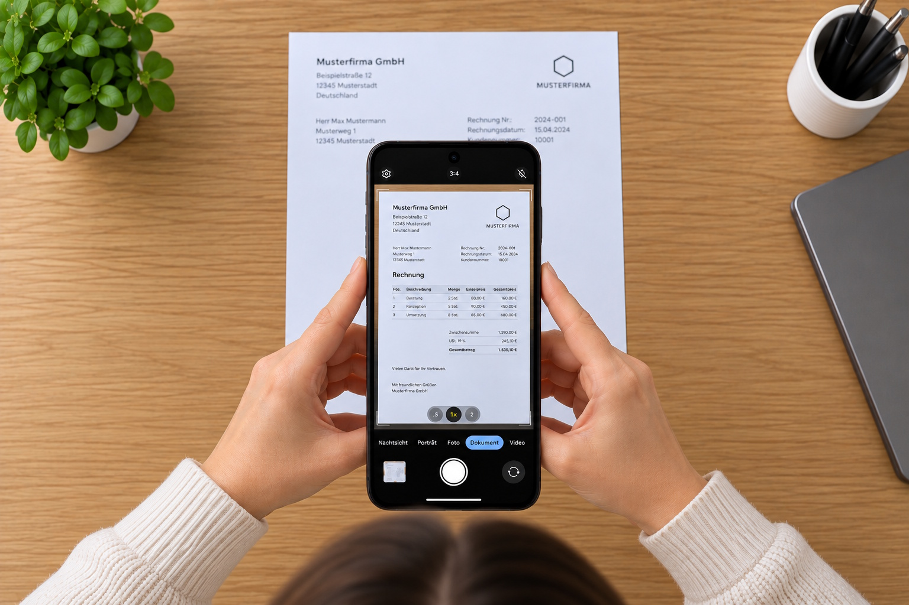

Bad Vigaun – Mein Terminplan
Therapeutische Termine einfach erfassen, im Blick behalten und rechtzeitig daran erinnert werden.
„Mein Terminplan“ hilft dir, deine Termine im Medizinischen Zentrum Bad Vigaun schnell und unkompliziert zu digitalisieren und jederzeit im Blick zu behalten. Die Bilder werden nicht in deiner Bibliothek, sondern in der App gespeichert.
Tippe auf die Info zum nächsten oder aktuellen Termin am Sperrbildschirm, um direkt zur App zu gelangen. Dort kannst du auch auf das Bildsymbol in der Übersicht rechts bei jedem Termin tippen, um den entsprechenden gescannten Plan zu öffnen. Tippe zweimal auf das Foto, um es zu vergrößern, und du kannst darin auch den Bildausschnitt verschieben.
Funktionen
Terminplan einlesen
Fotografiere den ausgedruckten Wochenplan möglichst gerade und gut ausgerichtet von oben. Tippe dafür auf die Scan-Schaltfläche oben rechts oder wähle über die Android-Fotoauswahl ein vorhandenes Bild aus. Eine gute, gleichmäßige Beleuchtung von vorne verbessert die Erkennung.

Kontrolliere die erkannten Einträge zuerst in der Vorschau. Mit „Übernehmen“ speicherst du sie, mit „Verwerfen“ bleibt dein bisheriger Terminplan unverändert. Falls die Erkennung nicht zufriedenstellend war, kannst du den Plan einfach erneut fotografieren. Beim Übernehmen werden ausschließlich die bereits erfassten Termine der neu eingelesenen Tage ersetzt.
Du kannst außerdem alle Termine über die Schaltfläche in der oberen linken Ecke löschen und jeweils nur die aktuelle Seite des Terminplanes einscannen.
Automatische Erkennung
Die App erkennt Datum, Uhrzeit und Bezeichnung der Termine aus dem fotografierten Plan.
Übersicht
Deine bevorstehenden Termine werden übersichtlich in der App angezeigt. Über das Foto-Symbol eines Termins kannst du das eingelesene Originalfoto öffnen, verschieben und vergrößern. Vergangene Termine werden automatisch ausgeblendet.
Widget
Platziere das Widget „Mein Terminplan“ auf deinem Startbildschirm, um den aktuellen oder nächsten Termin direkt im Blick zu haben. Auf unterstützten Android-Geräten kann das Widget zusätzlich auf dem Sperrbildschirm angeboten werden.
Erinnerung
10 Minuten vor Beginn eines Termins erhältst du auf Wunsch eine lokale Benachrichtigung mit Ton.
Wichtig
Die App ersetzt nicht deinen ausgedruckten Terminplan. Sie ist lediglich eine zusätzliche Hilfe, um deine Termine digital im Blick zu behalten und dich daran erinnern zu lassen.
Maßgeblich bleibt immer dein aktueller, vom Medizinischen Zentrum ausgegebener Terminplan.
Lies deshalb möglichst nur deinen aktuellen Terminplan ein. Die App kann nicht erkennen, ob ein eingelesener Plan inzwischen durch einen neueren ersetzt wurde.
Beim erneuten Einlesen werden die bereits vorhandenen Termine der erfassten Tage durch die Termine aus dem neuen Foto ersetzt. Am besten liest du daher direkt nach Erhalt eines neuen Plans die gewünschten Seiten ein und kontrollierst anschließend die erkannten Termine.
Eine private Posselei
Diese App ist eine privat entwickelte und kostenlose Posselei1. Sie entstand als kleine Spielerei während eines Kuraufenthaltes im wunderschönen Bad Vigaun und wurde anschließend privat veröffentlicht.
Die App ist kein Angebot des Medizinischen Zentrums Bad Vigaun. Die Medizinisches Zentrum Bad Vigaun GmbH & Co. KG steht in keiner geschäftlichen, technischen oder sonstigen Beziehung zu dieser App und ist weder an ihrer Entwicklung noch an ihrer Veröffentlichung oder Betreuung beteiligt.
Bitte richte deshalb keine Fragen, Wünsche, Supportanfragen oder Beschwerden zur App an die Mitarbeiterinnen und Mitarbeiter des Medizinischen Zentrums. Sie können hierfür keinen Support leisten und sollen dadurch nicht von ihrer eigentlichen Arbeit abgehalten werden.
Fragen zur App bitte ausschließlich an die unten angegebene Kontaktadresse richten.
Unterstützte Terminpläne
Die App wurde speziell für die Terminplan-Formulare des Medizinischen Zentrums Bad Vigaun mit Stand September 2026 entwickelt.
Ändert sich das Formular, kann die automatische Erkennung beeinträchtigt sein oder nicht mehr funktionieren. Auch ungünstig fotografierte oder schlecht lesbare Pläne können zu Fehlern bei der Erkennung führen.
Bitte kontrolliere deshalb nach jedem Einlesen, ob alle Termine ausreichend korrekt übernommen wurden.
Falls sich das Formular geändert hat oder Erkennungsprobleme auftreten, freue ich mich über eine kurze Nachricht an:
postmaster@goinon.info
So funktioniert’s
1. Terminplan erfassen
Tippe oben rechts auf das Scan-Symbol und wähle „Kamera“, um deinen ausgedruckten Plan direkt zu fotografieren, oder „Fotomediathek“, um ein bereits aufgenommenes Foto zu verwenden.
Die App erkennt die Termine automatisch und zeigt sie zunächst zur Kontrolle an. Erst mit „Übernehmen“ werden die erkannten Einträge gespeichert.
Fotografiere den Plan möglichst gerade von oben und achte auf eine gute Beleuchtung. Kontrolliere danach die erkannten Termine. Falls nötig, kannst du den Scan einfach wiederholen. Beim erneuten Einlesen werden nur die Termine der erkannten Tage ersetzt. Über das Papierkorb-Symbol oben links kannst du bei Bedarf alle gespeicherten Termine löschen.
2. Widget einrichten
Drücke länger auf eine freie Stelle deines Android-Startbildschirms, öffne die Widget-Auswahl und füge das Widget „Mein Terminplan“ hinzu. Die genaue Bezeichnung kann je nach Gerätehersteller abweichen.
Das Widget kennzeichnet den aktuellen Termin mit „Jetzt“ und den folgenden Termin mit „Demnächst“.
3. Benachrichtigungen
10 Minuten vor Beginn eines Termins kann dich die App mit einer lokalen Benachrichtigung und einem Ton erinnern.
Benachrichtigungen kannst du jederzeit in den Android-Einstellungen unter „Apps“ → „Mein Terminplan“ → „Benachrichtigungen“ erlauben, deaktivieren oder anpassen.
Die Erinnerung ist eine zusätzliche Komfortfunktion und ersetzt nicht die eigenständige Kontrolle deines aktuellen Terminplans.
Datenschutz
Deine Daten bleiben auf deinem Gerät.
- Keine Registrierung
- Keine Cloud
- Keine Drittanbieter-Dienste
- Keine Übertragung der eingelesenen Daten an einen Server
- Speicherung ausschließlich lokal auf deinem Gerät
Für neue Aufnahmen benötigt die App Zugriff auf die Kamera. Vorhandene Bilder wählst du über die systemeigene Android-Fotoauswahl aus; dafür erhält die App nur Zugriff auf das von dir ausgewählte Bild.
Einschränkungen und Haftung
Die automatische Erkennung kann nicht garantieren, dass jeder Termin ausreichend vollständig aus einem fotografierten Plan übernommen wird. Die App kann außerdem nicht feststellen, ob ein eingelesener Plan noch aktuell ist.
Die App wird kostenlos und ohne Gewähr für Richtigkeit, Vollständigkeit, Verfügbarkeit oder fehlerfreie Funktion bereitgestellt.
Sie dient ausschließlich als zusätzliches Hilfsmittel. Maßgeblich bleibt immer dein aktueller, vom Medizinischen Zentrum ausgegebener Terminplan.
Bitte kontrolliere daher die erkannten Termine nach jedem Einlesen und insbesondere nach Erhalt eines neuen Terminplans.
Kontakt
Bei Fragen, Wünschen, Problemen oder Erkennungsfehlern rund um die App wende dich bitte ausschließlich an:
Zum Schluss noch ein persönliches Dankeschön
Ein herzliches Dankeschön an das gesamte Team des Medizinischen Zentrums Bad Vigaun für 22 Tage perfekt auf mich zugeschnittenes, mitunter intensives Training und eine richtig schöne, gute und notwendige Auszeit vom Alltag.
Danke für die freundliche Betreuung und die großartige Arbeit!
Und natürlich besondere Dankesworte an die 506er Jungs aus Bad Vigaun: Andi, Hannes und Stefan! 😊
Pepi